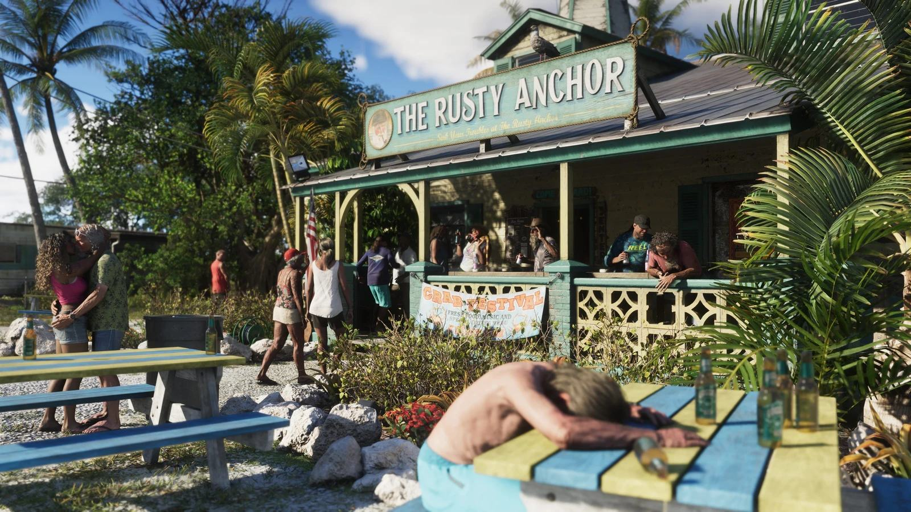

Coming Home: pick Lucia up from prison and celebrate at the Rusty Anchor

Mission facts
- Chapter: Chapter 1, mandatory story mission, needed for 100% completion. (Reported)
- Mission number: the 11th main mission, by most trackers. (Reported)
- Map name: Lucia's Release. (Reported)
- Given by: Lucia, by phone call. (Reported)
- Unlock: finish Feng Shui (Meet Cal), then wait for Lucia's call. (Reported)
- Where: starts at Hamlet Correctional in north Hamlet, then the Rusty Anchor bar in north Key Lento. (Reported)
- You play: Jason. (Reported)
- Reward: no cash reward, Lucia is released from prison and moves into Jason's house. (Reported)
- Next mission: Clean up After Donnie. (Reported)
Before you start: the 5 optional errands
The mission does not start at the prison. It starts the morning after Feng Shui, when Lucia calls to say she is being released soon. Before you pick her up, you can run five optional errands, and none of them is required. Each one improves your relationship with Lucia, so if you want the best start, do them all before you drive to the prison. (Reported)
- Pick up groceries, then drop them off. Head to the grocery store and pick up food for the house. The map lights up with dozens of food and drink icons, but you only need to grab a few before the game tells you to leave. (Reported)
- Buy flowers. Pick up flowers from the flower shop. (Reported)
- Buy Lucia a necklace, $425. Buy the necklace from the jewellery shop. This one is worth doing even if you skip the rest, because it comes back later in Chapter 2. (Reported)
- Get the Chop. Get a haircut for Jason at the barbers. (Reported)
- Get Lucia's clothes. Pick up Lucia's change of clothes from her friend Andy, who works at a bar in the Keys. Take Jason's vehicle and keep the clothes in the trunk, so Lucia can change into them at the Rusty Anchor. (Reported)
While you wait, you can also fix up Jason's house: paint the bedroom wall any colour you like, fix the broken stairs, climb the ladder to fix the roof, and fix the broken workout balcony railing. Lucia notices the repairs in the closing cutscene, and they count toward the relationship too. If you do all five errands, the relationship starts at a 3/4 romantic rating in the Jason and Lucia menu. (Reported)
Skipping the errands is fine. You just start the relationship lower, and the mission plays out the same way. (Reported)
Step by step
- Finish Feng Shui, then run the five optional errands and fix up the house if you want the relationship boost.
- Sleep in Jason's house until the next morning, when Lucia calls to say she is being released.
- Drive to Hamlet Correctional in north Hamlet. Keep Lucia's clothes in the car trunk if you collected them.
- Walk to reception, talk to the guard, watch the flashback, then meet Lucia at the prison gate and walk her to the car.
- Drive south to the Rusty Anchor bar in north Key Lento and park in the marked spot.
- Go inside, meet Cal at the bar, then order two Pindayho beers for $6 and carry them to Lucia.
- Hang out with your friends: talk to Cal and Donnie, meet Kat and Mattia, and dance with Lucia.
- Find Mattia outside on the phone, offer him a drink, then play pool with him.
- When D-Man and the Aviators interrupt the pool game, go outside and fight them.
- When the police arrive, run with Lucia to the beach, then follow her home.
Before any mission like this, a manual save is cheap insurance, GTA 6 has no mission replay (Reported).
Pick up Lucia
When you are about 0.12 miles from the prison, a short scene plays as Jason approaches, and the mission truly kicks off. Exit the vehicle, walk toward reception, and talk to the guard. That starts a flashback cutscene from four months ago, a call between Jason and Lucia in which she tells him about Tomas for the first time, and it ends with Lucia and Jason reuniting at the prison exit. Walk her back to the car. Depending on which optional errands you finished, Lucia comments on the changes, for instance if you are wearing something casual, she notes it. (Reported)
Pick her up promptly. IGN reports this is a timed mission: if you do not pick Lucia up before about 2:20 PM in-game, she calls and says she can take the bus. Jason insists on picking her up, but the damage to the relationship is done, and the mission is forced on from that point. This timing comes from IGN only, so treat it as a warning, not a confirmed rule. If you do not want to wait until the next day for her call in the first place, sleep to pass the time, and she calls as soon as Jason wakes up. (Reported)
The Rusty Anchor
Instead of heading home, you are heading to a party. Drive south back to Key Lento toward the north side of the island, following the GPS to the Rusty Anchor bar, and pull into the marked parking spot. During the drive, Jason asks if Lucia's aunt can bring their son down for a visit, but Lucia explains that, given the situation, it is currently not possible. Lucia suggests that Kat, a new friend she made in prison, might have a lead for them on more lucrative work. (Reported)
If you brought Lucia the change of clothes from Andy, she grabs the bag and heads into the bar bathroom to change. While she is in there, head to the bar to meet Cal, who orders three beers. Then speak with the bartender and order two Pindayho beers for $6, one for Lucia and one for Jason. You hold one beer as soon as you pay, and the second appears on the counter, so pick it up and carry both outside to Lucia, who is behind the bar. Delivering the beer starts a cutscene where the two catch up, and Lucia announces that her rich friend Kat and her husband are on their way. (Reported)
The cutscene ends with Jason in the bathroom. IGN notes that using the sink to wash Jason's hands gives him a Focus buff, so it is worth doing while you are there. Back at the bar, Cal and Lucia order more drinks and chat, and Lori and Brian arrive. (Reported)
Hang out with your friends
This part is casual, and there are plenty of people to talk to around the bar. You only have to speak with Cal and Donnie to progress, but walking around and talking to the rest gives you extra scenes and relationship points. (Reported)
- Cal: talk to Cal and you can help him swipe through matches on a dating app. Helping him or not has no consequence, but you learn he is into more mature ladies. (Reported)
- Donnie: Donnie offers you cocaine with him in the bathroom. The guides disagree on what accepting does: IGN says it lowers your relationship with Lucia, while PowerPyx says it has no effect at all. Declining costs you nothing, so decline if you want the best relationship rating. (Reported)
- Lori and Brian: Lori and Brian arrive during the evening. You can steal Lucia away from Lori for a small relationship boost, or just watch the conversations. Brian is very drunk and mumbles about kids if you stand near him. (Reported)
- The Aviators: a group of military men, the Aviators, walk up and bother Lucia. You can interrupt, which builds the relationship, or let her handle it, which changes nothing. You do not have long to decide. (Reported)
- Kat and Mattia: Kat arrives with Mattia. Kat is Lucia's former prison cellmate, and she is pregnant. Mattia is her rich boyfriend, who is connected to powerful people. (Reported)
- Dance with Lucia: Lucia invites Jason to dance. Approach her and move forward to dance, and add flair to your moves when prompted. Dancing gives you a relationship boost. While you dance, Kat says her baby is kicking, and Jason can feel her belly. (Reported)
- Rhonda: you can talk to Rhonda, the woman with a lizard on her neck, and IGN notes that helping her with a task can raise Jason's professionalism rating. That detail comes from IGN only. (Reported)
- Andy: Andy arrives at the bar, and her joyful reunion with Lucia varies based on whether you met her before the pickup. You can talk to her to hear a short story about Lucia when she was young. (Reported)
Lucia gets a call either way and steps out. When she asks you to find Mattia, head outside behind the bar, where he is on the phone. He does not want to talk at first, so it is best to find him again later. (Reported)
Play pool with Mattia
Talk to Mattia at the bar, and the conversation turns to work. He shrugs Jason off, then challenges him to a game of pool. Pick up a pool cue from the wall next to the table, then approach the end of the table with the white ball to begin. Hold to aim the cue, add spin if you like, adjust your angle with the right stick, then pull back and push forward to shoot. The first ball you pocket decides whether you play stripes or solids, and a preview of the shot shows as transparent path lines so you can judge it before you shoot. (Reported)
You cannot finish the game. After your second turn, the Aviators who were hogging the pool table return and hassle Lucia and Kat about their boys taking the table. D-Man picks up the white ball and interrupts the game, and the cutscene kicks off. Your score does not matter, so do not worry about playing well. (Reported)
Deal with D-Man
Mattia and Kat leave while Jason goes out front with D-Man for a fight. Attack with Square on PS5 or X on Xbox, and hold X on PS5 or A on Xbox to block. Watch D-Man's shoulders: when they start to rotate, that is when you want to hold block. After you knock out D-Man, two other men step forward to fight. Give them each a few punches, and as you do, Lucia joins in and chokes out the Aviator standing next to her before he can join the fight. (Reported)
When all the men are down, police cars roll in. Lucia cannot afford to be caught on the night of her release, so run with her. Follow her through the neighbourhoods, Jason suggests running to the water, and the escape ends with a cutscene between the two on the beach before they return home. (Reported)
What happens after
Back at the house, Lucia walks through as Jason explains it is still a work in progress. She reacts to the work you did, which can earn you extra relationship points. The mission ends the next morning, with Lucia leaving for her work detail and Jason getting a call from Donnie that leads to the next mission. If you did all the optional errands for her, you start the relationship at a 3/4 romantic rating in the Jason and Lucia menu. Keep working on the relationship and you can eventually reach the "Hot Together" rating later in Chapter 2. Relationship changes show as a heart icon popup on the right side of the screen, so turn on all HUD and Progress Notifications under Settings, UI, if you do not want to miss status updates. (Reported)
Tips
- Do the errands and repairs first. All five errands plus the house fixes start the relationship at 3/4 romantic, the best opening you can get. (Reported)
- Buy the $425 necklace. It is the one errand that matters again later, in Chapter 2. (Reported)
- Pick Lucia up promptly. IGN reports a soft deadline around 2:20 PM in-game, and being late hurts the relationship. (Reported)
- Decline Donnie's offer. The guides disagree on whether accepting hurts your relationship with Lucia, and declining is free, so decline. (Reported)
- Wash your hands at the bar sink. IGN reports it gives Jason a Focus buff. (Reported)
- Do not worry about the pool score. The Aviators interrupt the game before it ends. (Reported)
- Save first. There is no mission replay, so a manual save before you start lets you redo the evening if you want to try the other choices. (Reported)
Previous and next missions
Coming Home unlocks after Feng Shui, in which Jason rearranges the house with Cal. In the order most trackers list Chapter 1, it is the 11th main mission. The next mission is Clean up After Donnie, which starts when Donnie calls the morning after, and there is also a general Earn Money mission to work on while Lucia does her community service. If money is tight, see how to make money in GTA 6. See the full list on our GTA 6 missions page. (Reported)
FAQ
How do you start Coming Home in GTA 6?
Finish Feng Shui, then wait for Lucia's call. Sleep at Jason's house until the next morning if she has not called yet, then drive to Hamlet Correctional. (Reported)
Do you have to do the 5 optional errands in Coming Home?
No, all five are optional. Each one improves your relationship with Lucia, and doing all of them starts the relationship at a 3/4 romantic rating. (Reported)
What happens if you are late picking up Lucia?
IGN reports a soft deadline of about 2:20 PM in-game: if you are late, Lucia calls and says she can take the bus, and the relationship takes a hit. This timing comes from IGN only. (Reported)
Can you win the pool game in Coming Home?
No. The Aviators interrupt the game before it finishes, when D-Man picks up the white ball, so your score does not matter. (Reported)
Is there a reward for Coming Home in GTA 6?
No cash reward. Lucia is released from prison and moves into Jason's house, and Donnie calls the next morning with the next job. (Reported)
What mission comes after Coming Home in GTA 6?
Clean up After Donnie, which starts when Donnie calls the morning after, plus a general Earn Money mission while Lucia does her community service. (Reported)
Sources checked 28 November 2026: IGN, PowerPyx, Video Games Chronicle and Exputer walkthroughs, they agree on the Feng Shui unlock, the five optional errands, the Rusty Anchor bar, the pool game, the fight with the Aviators, and Clean up After Donnie as the next mission; they disagree on whether accepting Donnie's offer affects the relationship with Lucia, and that disagreement is marked on this page. The 2:20 PM pickup timing, the sink Focus buff and the Rhonda task come from IGN only. Labels: Confirmed = officially stated or multiply verified; Reported = claimed by sources, not yet officially confirmed; Not announced = no reliable information yet. Walkthrough steps come from player guides and may vary or be patched.